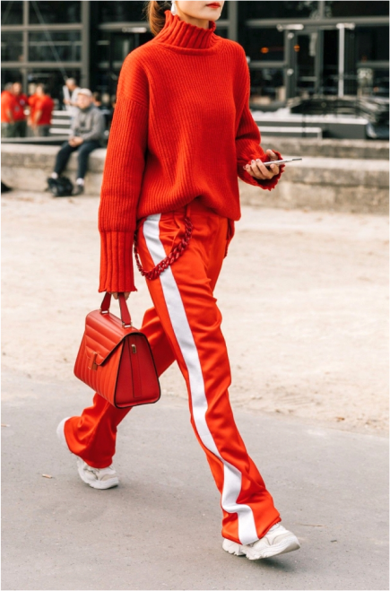
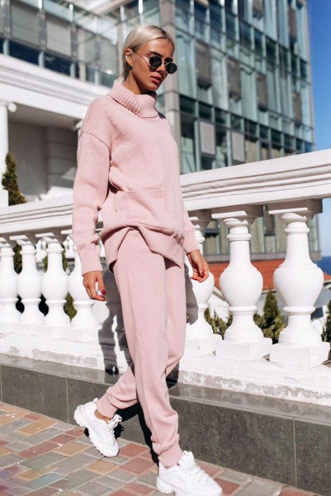

1 / 4
образы в стиле спорт-шик 1
2 / 4
образы в стиле спорт-шик 2
3 / 4
образы в стиле спорт-шик 3
4 / 4
образы в стиле спорт-шик 4
базовые
вещи
- Трикотажная майка, широкая футболка или кроптоп с надписью, номером или изображением в стиле поп-арт.
- Спортивные брюки (обязательно с лампасами), леггинсы или мешковатые бананы в зависимости от особенностей фигуры.
- Платье, напоминающее большую футболку или свитшот.
- Теннисная юбка или классическая плиссированная.
- Худи, олимпийка или бомбер, куртка-парка, косуха или кашемировое пальто лаконичного кроя.